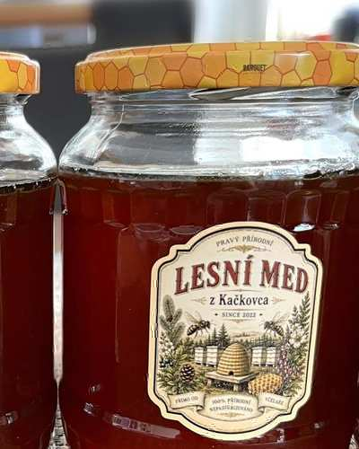

Lesní med
z Kačkovca
Med, který zraje tam, kde končí cesta – na kraji lesa u Kačkovského potoka, pár kroků od Ládovy maringotky.
Objednat medPříběh
Kousek lesa, jedna maringotka
a pár tisíc včel
Láda si místo u Kačkovce vybral v roce 2022 – ne kvůli výhledu, ale kvůli tomu, co roste kolem. Smrky, jedle, akáty a lipiny, a mezi nimi úzký pramen, kterému se tu odjakživa říká Kačkovský potok. Včelám to stačí k tomu, aby nanosily med, který nechutná jako ten z obchodu.
Přes sezónu tu bydlí v maringotce, pár metrů od úlů. Když se ráno probudí, první věc, kterou slyší, není budík, ale bzukot. Když prší, poslouchá kapky na plechové střeše a přemýšlí, jestli se všechny včely stihly vrátit domů.
Med se netočí podle kalendáře, ale podle počasí a snůšky. Někdy ho je málo, někdy víc – ale vždycky jen jeden druh, jen z jednoho místa, beze změny a bez míchání šarží.

Nabídka
Jedna snůška, tři velikosti
Lesní med z Kačkovca – nepasterizovaný, neředěný, přímo z Ládových úlů. Vyberte si sklenici, která vám vydrží tak akorát.
O nás
O Ládovi a poctivém medu
Láda se stará o pár včelstev v okolí Kačkovce na jižní Moravě, kousek od Kačkovského potoka. Med netočí do velkoobchodu – jen tolik, kolik sám zvládne vytočit, nechat uležet a naplnit do sklenic, které pak vlastnoručně podepíše.
Žádná pasterizace, žádné míchání šarží, žádná chemie v úlech. Co vyteče z medometu, to skončí ve sklenici – a odtud rovnou k vám.
Platba převodem
Po domluvě můžete zaplatit převodem – naskenujte QR kód ve své bankovní aplikaci a doplňte částku podle objednávky.
123456 7890 / 0300
Ukázkové číslo účtu – před spuštěním webu nahraďte skutečným účtem Lády.
Včelař Láda · Kačkovec, jižní Morava
kontakt@doplnit.cz · +420 000 000 000 — doplňte prosím skutečný telefon a e-mail.